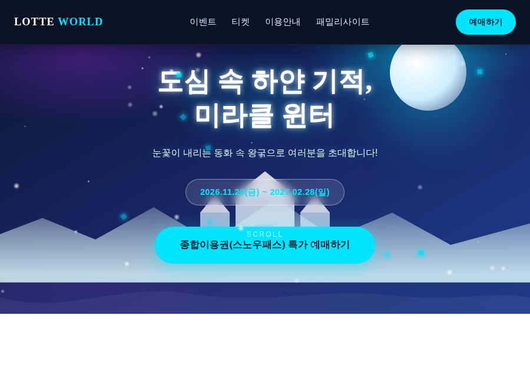

시안 A · 기본안
오로라 아이스
제공된 디자인 프롬프트를 그대로 구현한 기본 방향. 다크 네이비 → 딥 블루 배경에 아이스 시안 포인트, 오로라 퍼플 섹션 글로우, 글래스모피즘 카드와 눈송이·다이아몬드 파티클로 신비로운 겨울 왕국 분위기를 표현했습니다.
#0F172A → #1E3A8A
#00E5FF 포인트
글래스모피즘
세리프 타이틀
시안 A 전체화면으로 보기 →